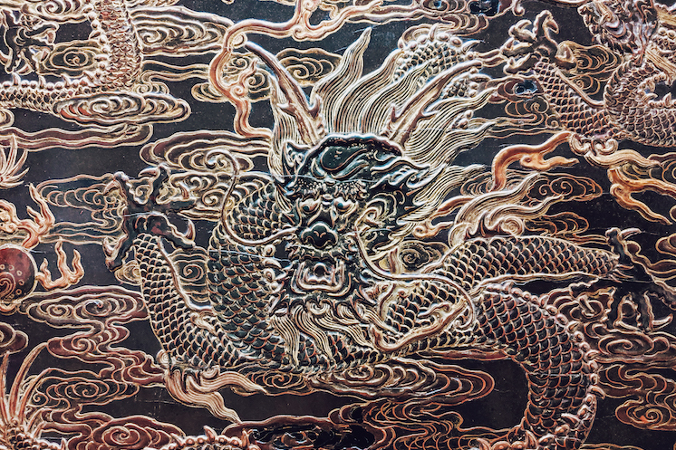
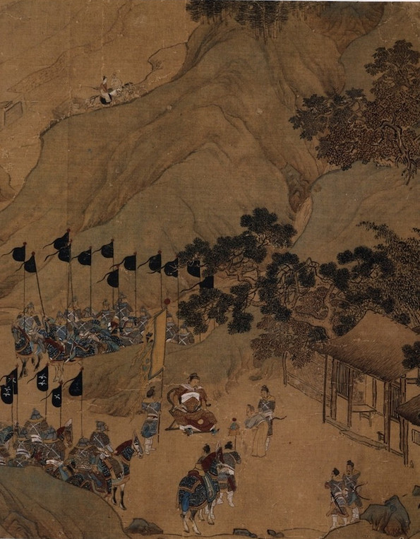

Yuanfen (缘分) - "fateful coincidence". You are an imperial state official sent to a riotous province on an important errand. Little did you know you would find your soulmate amongst the rebels.

"Do you have the patience to wait until your mud settles and the water is clear? — Lao Tzu, "Tao Te Ching"

"Armoured Ming Cavalry Passing Through the Valley". Liu Jun, early Ming Dynasty. Source: Wikipedia.
"Bearing and nurturing,
Creating but not owning,
Giving without demanding,
Controlling without authority,
This is love." — Lao Tzu, "Tao Te Ching"
"When people see some things as beautiful,
other things become ugly.
When people see some things as good,
other things become bad." — Lao Tzu, "Tao Te Ching"